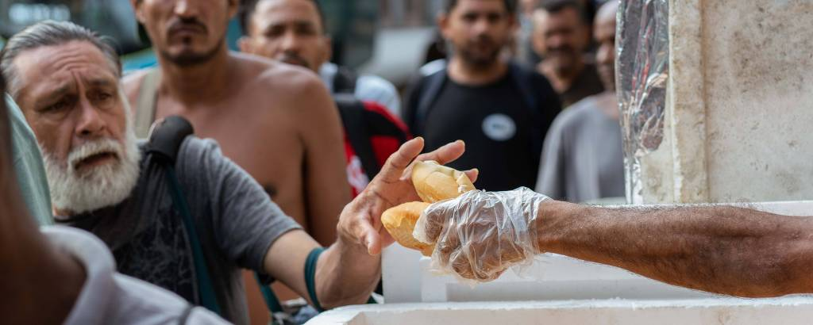
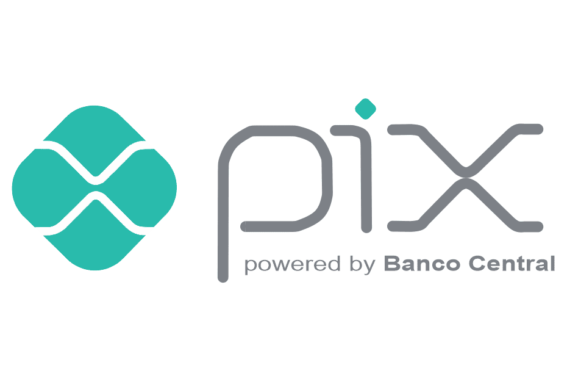

O que fazemos
Ação nas Ruas: Nossas equipes de voluntários percorrem a cidade regularmente para distribuir refeições completas e nutritivas à população em situação de rua. Mais do que apenas alimento, oferecemos uma palavra de conforto, um olhar de acolhimento e a certeza de que eles não foram esquecidos.
Apoio às Famílias: Através de um sistema de cadastro e parcerias, identificamos famílias em situação de vulnerabilidade e fornecemos cestas básicas com itens essenciais. Com isso, garantimos o alívio imediato da fome e permitimos que essas famílias possam focar em outras necessidades, como saúde, educação e a busca por emprego.
Sua Doação Transforma Vidas!
Doar para a "Comida para Todos" é mais do que um simples ato de caridade; é um investimento direto na dignidade humana e na construção de uma sociedade mais justa e solidária. Cada contribuição, não importa o tamanho, gera um impacto profundo e imediato na vida de quem enfrenta a dura realidade da fome.
Como doar!
Banco: Fintech 0taxa
Agencia: 0001-1
Conta corrente: 12346578-9
chave pix: foodforall@foodforall.com
